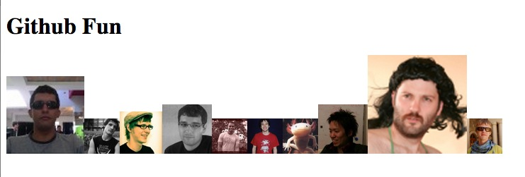

For this test you will need to make a AJAX request to github to get the last 20 commits to rails, and then add the avatars of the committers to the #content div. The more commits they have made, the bigger the avatar should be. For example:
You can use whatever libraries you want, jQuery is already provided in the test.html file. Feel free to add any styling you wish as well.
Example Result:
